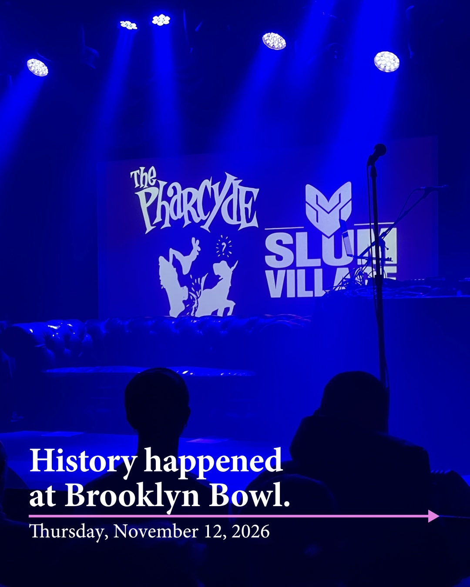

Slum Village & The Pharcyde. Much love to J Dilla.

History at Brooklyn Bowl.
Use Next or swipe to move through the night. Sound is part of the story.
This video couldn't load. Try again or move to the next slide.
Enable JavaScript to watch the slideshow. The full caption is below.